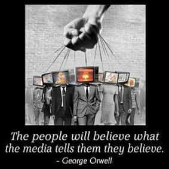

< < < Back
Is The Modern Man Truly Softer Than His Predecessors? – Return Of Kings
The life of man upon earth is a warfare, and his days are like the days of a hireling. – Job 7:1, DRA
Is the contemporary man more comfortable (and thus less “stronger”) than his primitive ancestors? This topic has been the subject of debate among men since the ages.
Well, with the advancement in modern technology, it could be argued that the modern man enjoys a “luxurious” lifestyle which his forefathers could only dream of. And at the same time, it has been argued by some that he could have become “softer” as compared to his predecessors.
But is this really so? A closer look at the life of a modern man actually reveal serious challenges which, even though they might not directly threaten his survival on a basic level as his forefathers had, can threaten his identity and quality of life in the long run as a man.
There will always be a test, even in luxury
There will always be a problem in a man’s life – even if he is enjoying a life of relative comfort as compared to others. Man is tested in both luxury and adversity—in fact the tests which luxury bring on a man tend to have more debilitating consequences for a man should he fail them, and more more importantly, fail to identify them to begin with.
And arguably the main reason why most modern men fail to identify the tests of a luxurious modern lifestyle is because they’ve been raised with blue pill indoctrination which teaches them to believe in these transitory and illusionary “pleasures” and comfort as the real thing.
By the time reality dawns, for some unfortunate souls, the damage done is too great, even if it may be still rectifiable. And in today’s environment. the main and evolved challenges modern men face (and not necessarily in that order) are:
1. Women
There is little difference between women throughout history, indeed – and they continue to remain as one of the primal tests men have to face throughout their earthly lives. Primitive man would’ve probably shuddered at the quality of modern women’s behavior (even with the increased “easiness” of them) – but the fact remains that with the increased feminism and unchained hypergamy of modern women, men, along with game has undergone tremendous evolution compared to primitive times.
Men today have to increasingly act as clowns to seduce women – which probably his forefathers would’ve find as ridiculous. At the same time, men in modern gyno-centric societies have to contend with the ever-increasing whirlpool of trashy women – who are good only for sex, but not for commitment – thus lowering the incentives and options for a modern man to raise a stable family.
Primitive man probably didn’t have to worry about his ass getting jacked in divorce courts, nor would he have to worry about missing child support payments for an irresponsible divorce thrust upon him by his mate.
With modern society increasingly favoring his irresponsible mate over him and he reduced to the position of a dispensable tool in this dysfunctional social construct, one would wonder how primitive man would adapt to this scenario, or more importantly – modern women.
2. Society
Much has been already written about the modern war against masculinity; and how men are gradually “evolving” into comical caricatures of pseudo-alphas dictated by the feminist bandwagon of modern societies.
Modern man’s forefathers probably would shudder at the life of their male descendants, were they alive to see at the societal beta-indoctrination peddled to psychologically emasculate young men in today’s societies.
With state-sponsored feminism increasingly trying to dismantle patriarchy in the modern world, a modern man usually has relatively little support to rebel against the modern feminist herd. With men turning against men to support feminism, the challenges a modern man has to face are overwhelming.
Beta-indoctrinating messages hurled at him since his birth, termagant feminist women who relentlessly cock-tease him to psychologically sexually desensitize him, unnatural societies where he finds where his natural sexuality being increasingly demeaned, challenges at workplaces where he finds it difficult to adapt, marriages where women increasingly abuse their husbands yet courts favor women – the list is too many.
In fact, it could be argued that he is being “tested” even more than his predecessors.
3. Code system

Every individual functions according to a code. A modern man has is often raised to adhere to such codes – whether it may be through religion, or modern dysfunctional social constructs like feminism which teach him against his own nature.
No man is an island; and the whole idea of blue pill indoctrination of men’s code systems is to mess up with the tribe – a man who finds that his tribe is blue pill will be forced to follow the herd. Add to that twisted interpretations that the majority is always right (another variation of the Group Trap which Harry Browne mentions) and men will succumb to a flawed code system.
Old habits die hard, and the optimal time for a man’s indoctrination begins from his birth. In fact, a man’s strong inner code is what defines his life irrespective of the circumstances or his environment he might himself in.
A blue piller who has strong blue pill code would continue to wade in his blue pill ignorance, even if he might be thrust in a society where men are actually rewarded for being true men. Instead, he would wage a war on this society for being oppressive to women—because he was raised to believe so.
This is why it is a great challenge to modern men to fight the code system they are raised in—because it often takes a great amount of time to deprogram from it.
Conclusion
In today’s environment, a man’s challenges have evolved onto social, political and professional levels – as compared to the physical levels they were usually restricted to in primitive times. It would be immature to expect a man to combat against the blue pill world purely on a physical level.
All credit goes to the man who disengages himself from the blue pill herd and rebels, because his resistance itself is commendable considering the odds stacked against him. One wonders how the men of the future would have to face more challenges considering the civilizational decline we are set in.
However, in spite of all the negatives a modern man might find himself at birth, the responsibility to unplug still resides on his shoulders. And the thing which will undoubtedly help him is the red pill—to unplug himself, and more importantly to help him realize that he is continually in a state of existential warfare for the protection of his own masculine identity in today’s world.
The man who fails to take it and falls prey to the supposed comfort of modern life—in spite of knowing the enlightenment that the red pill brings—has nobody to blame but himself.
Read Next: The War Against Men


{kind=link}
{kind=link}
{kind=link}
{kind=link}
{kind=link}
{kind=link}
{kind=link}
{kind=link}